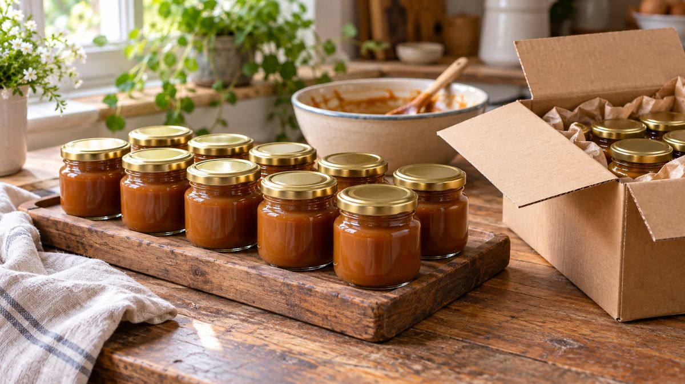

Da cozinha de casa a fornecedor: os marcos reais de crescer vendendo doce

Você abriu o MEI, já vende geleia ou doce em quantidade regular, e acha que está tudo certo. Mas formalização fiscal e regularização sanitária são coisas diferentes, e essa confusão é uma das mais comuns entre quem cresce vendendo comida feita em casa.
MEI resolve a parte fiscal, não a sanitária
O MEI, com o CNAE que cobre doce e salgado feito em casa, resolve a parte tributária: você emite nota, recolhe imposto, tem CNPJ. Mas ter CNPJ registrado no seu endereço residencial não autoriza, sozinho, a produção comercial de alimento ali dentro. A Vigilância Sanitária municipal fiscaliza a manipulação de alimento pra terceiros independente do MEI estar em dia ou não. Domicílio fiscal não é licença sanitária.
O que a Vigilância Sanitária realmente pede
A referência nacional é a RDC nº 216/2004 da Anvisa, que trata de boas práticas pra serviços de alimentação. Na prática, ela pede:
- Espaço dedicado à manipulação do alimento, não misturado com o resto da cozinha da casa.
- Fluxo que evite contaminação cruzada, com controle de temperatura e instalação sanitária separada da área de preparo.
- Classificação do risco do produto (perecível ou de longa conservação).
- Documentação: licença sanitária municipal e registro de boas práticas.
A regra específica varia de prefeitura pra prefeitura. Antes de crescer o volume, vale perguntar direto pra vigilância sanitária do seu município três coisas: se a sua cozinha, do jeito que está, precisa de vistoria; se existe exigência de curso de manipulação de alimentos; e se há um limite de produção pra operação ainda ser considerada doméstica.
Rotulagem não é opcional quando você vende pra terceiro
Assim que o produto sai da sua mão direto pro cliente final passa a valer rotulagem completa: nome do produto, lista de ingredientes em ordem decrescente, identificação de alérgenos, data de fabricação, prazo de validade, nome e CNPJ do fabricante, e condição de armazenamento.
Quando a cozinha de casa fica pequena: cozinha compartilhada
Quando o volume passa do que a cozinha de casa aguenta, e reformar ou montar uma cozinha industrial própria ainda não faz sentido financeiro, existe uma alternativa real no Brasil: cozinha industrial compartilhada. É um espaço equipado (forno, câmara fria, bancada) que várias operações diferentes alugam, cada uma com sua marca e produção independente. Operadoras como Kitchen Central, Oficina da Mesa e Hub Food Service já atuam nesse modelo em algumas capitais. Vale pesquisar se existe algo parecido perto de você antes de investir em reforma própria.
O que muda quando você passa a fornecer padaria, empório ou mercado
Vender direto pro consumidor final e fornecer pra um ponto de venda são negócios diferentes. Quem compra pra revender costuma exigir nota fiscal regular, comprovação de regularização sanitária, e uma embalagem que aguente transporte e manuseio em lote maior, não só a apresentação bonita que funciona na venda direta. É nessa fase que a embalagem deixa de ser só estética e passa a fazer parte da negociação comercial.
A PodEmbalar acompanha esse crescimento: os mesmos potes usados na produção pequena, como o Pote Geleinha 40 ml, seguem funcionando quando o volume cresce, com fechamento padronizado em qualquer quantidade. Conheça o catálogo ou fala com a gente pelo WhatsApp pra entender o que muda no fornecimento em volume maior.